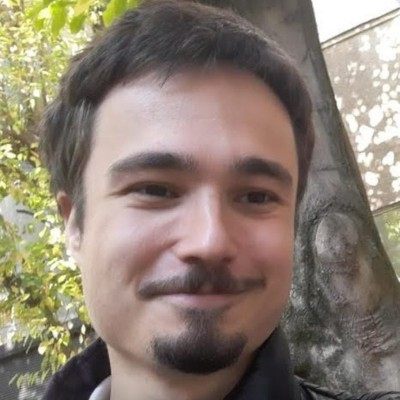

VLAD ARAMBAȘA
Resume
Pages
Copages
Subpages
Resume
Teaching & Work Experience
West University of Timișoara – Teaching Assistant Oct 2022 – Present Probabilities and Statistics (Labs – 2023, 2024, 2025)Algorithms and Data Structures (Labs – 2022)Skills: University-level instruction, statistical programming (R, Python), algorithmic thinking, C/C++
Școala Gimnazială nr. 21 "Vicențiu Babeș" Timișoara Sep 2024 – Present Skills: Digital literacy education, curriculum development, classroom management
Școala Gimnazială nr. 24 Timișoara Sep 2024 – Present Skills: STEM education, mentoring, early-level programming instruction
HELLA – Junior Software Developer Sep 2023 – Apr 2024 Skills: Embedded systems, CAPL scripting, CAN/LIN protocols, team collaboration in automotive software
Școala Gimnazială Nr. 30 – Computer Science Teacher Sep 2022 – Sep 2023 Skills: IT curriculum design, practical programming teaching, educational technology integration
Școala Gimnazială Nr. 16 – Computer Science Teacher Dec 2020 – Aug 2022 Skills: Long-term student engagement, differentiated instruction, online teaching tools
CoderDojo – Mentor Jul 2015 – Jul 2019 Skills: Volunteer mentoring, youth programming education, community tech involvement
Continental – Junior Programmer Sep 2018 – Apr 2019 Skills: Programming fundamentals, software lifecycle exposure, technical documentation
Education
M.Sc. in Artificial Intelligence West University of Timișoara (2023 – 2025) Skills: Machine learning, neural networks, autoencoders, academic research
B.Sc. in Mathematics West University of Timișoara (2020 – 2023) Skills: Probability theory, statistics, mathematical modeling, logical reasoning, calculus
B.Sc. in Computer Science West University of Timișoara (2017 – 2020) Skills: Programming (C/C++, Python, R, PHP), algorithms, systems design
Baccalaureate – Mathematics and Computer Science Liceul Teoretic "Grigore Moisil" Timișoara (2013 – 2017) Skills: Foundational math, early programming, algorithmic foundations